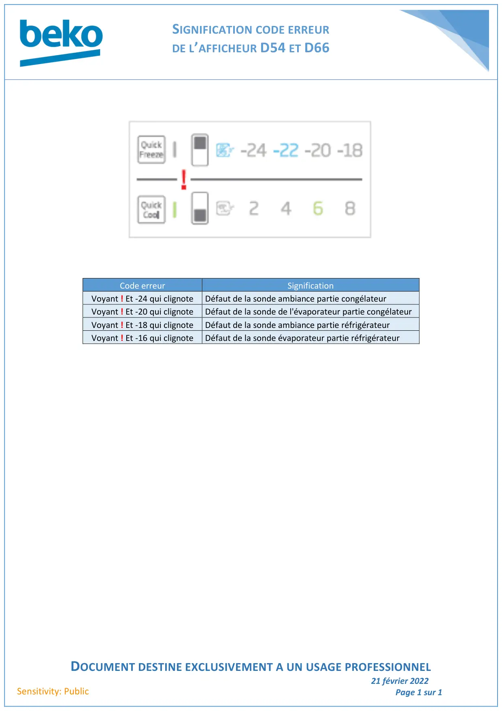

Codes erreurs afficheur D54 et D66

SIGNIFICATION CODE ERREURDE L’AFFICHEUR D54 ET D66DOCUMENT DESTINE EXCLUSIVEMENT A UN USAGE PROFESSIONNEL21 février 2022Page 1 sur 1Sensitivity: PublicCode erreurSignificationVoyant ! Et -24 qui clignoteDéfaut de la sonde ambiance partie congélateurVoyant ! Et -20 qui clignoteDéfaut de la sonde de l'évaporateur partie congélateurVoyant ! Et -18 qui clignoteDéfaut de la sonde ambiance partie réfrigérateurVoyant ! Et -16 qui clignoteDéfaut de la sonde évaporateur partie réfrigérateur
1 / 1